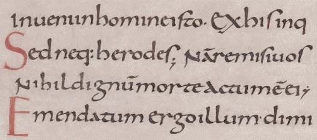
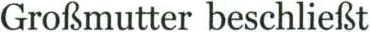

Evidently, the “Russian” languages, Greek and Hebrew have a different alphabet from the Latin-based languages! Let’s have a brief look at the various alphabets…
In case you’re wondering where the word “alphabet” comes from: the Latin alphabet was invented by the Semitic countries to the East of the Mediterranean Sea. The Greeks adopted and adapted this alphabet; the Etruscans and Romans of Latium later did the same. The Latin letter A is derived from the Egyptian symbol for “ox head”; the Phoenicians turned that symbol into “alef”, the Semitic word for “ox head”. The symbol was rotated by 90° to become “alfa” in Greek. “Beta”, derived from the Semitic word “beth” (house) is the second letter of the Greek alphabet. In other words: the Latin, Greek and Hebrew alphabets are more related than you might think…!)
The earliest known inscriptions in the Latin alphabet date from the 6th century BC. The Romans used just 23 letters — not 26! — to write Latin; that’s after they added the Greek letters “Y” and “Z” to the alphabet they inherited from the Etruscans. There were no lowercase letters.
ABCDEFGHIJKLM
NOPQRSTUVWXYZ
For phonetic reasons, the symbols “J”, “U” and “W” were added to our alphabet during the Middle Ages. The Latin language used an “I” symbol where we use a “J”, a “V” symbol where we use a “U”. “The “w” consonant did not exist in Latin. Think of the famous text “SENATVS POPVLVSQVE ROMANVS…” (“The senate and people of Rome…”) as you for instance find it on the base of Arch of Titus, constructed in 82 AD to celebrate the victories of emperor Titus.
To add the new symbols, the shape of the “U” character was based upon the “N” symbol, the shape of the “W” character was based upon two joined “V” symbols. (The English language calls this symbol a “double u” to this day!)
Ironically, inscriptions of the Romans on, say, stone monuments (“capitalis monumentalis”) are more readable than manuscripts from the Middle Ages and documents from the 19th century! The examples below illustrate the Trajan script, so-called because it was found on the base of Trajan’s Column, constructed in the year 114 AD to celebrate emperor Trajan’s victory over the Dacians.
actual inscription (contains abbreviations)
expanded version (has no abbreviations, uses the full character set)
English translation
Because of its regular, “geometric” character and its simple but impressive elegance, these serif letters on the base of the column (now called Trajan) unarguably became the most infuential version of ancient Latin script. Suffice it to say that the uppercase characters of the Latin alphabet as we now know it to be used by most languages are simply based upon it!
Notice how this Roman inscriptional lettering carved in stone already has beautiful serif: it’s fair to say the old Romans invented serif…
An eminently recognizable and perfectly legible typeface, isn’t it? The “tail” on the letter “Q” is a dead giveaway. Not to mention that its clarity has never been improved upon!
As the Roman era came to an end, this script was abandoned in favor of the uncial script that would be used from the 3rd to the 8th centuries AD. Still no lowercase characters, but ascenders and descenders were added to the letters in the course of the 6th century, which gives one the impression that uppercase and lowercase characters are mixed!
Towards the end of the 8th century, we saw the first post-Roman empire governed by Charlemagne, who installed of education policy based on literacy and writing schools (“scriptoria”). As a result, the English scholar Alcuin of York, head of the scriptorium in Charlemagne’s capital Aachen, morphed the uncial script into Carolingian lowercase script. This script would be used from 800 to 1200.

Carolingian script was clear and legible with rounded shapes. This script clearly distinguished the lowercase and uppercase characters. It also put spaces between the words — a novelty in Europe: the Romans put a dot between the words, uncial manuscripts started using word separation at a late stage. (In 300 B.C., the Babylonians, the inventors of the cuneiform script, began using two slanted wedges to represent a space on the abacus. Their space was meant as punctuation, it did not represent a zero!)
Contrary to the Gothic fonts that replaced the Carolingian minuscule, the Carolingian script seemed so “classic” to the Renaissance printers such as Aldus Manutius that it looked truly “Roman”, so the Humanist fonts were based on it. In this sense, Carolingian script was the basis for our modern Latin-alphabet fonts…!
It’s easy to see how the Gothic fonts (often called “Fraktur” or “blackletter”) used in Europe until 1941 were derived from the uncial and Carolingian script during the 12th century! Gothic typefaces offered a real advantage to the scholars that produced the manuscripts: the previous script, although easily legible, was time-consuming and labour-intensive to copy. Furthermore, the letter shapes are wide and take up a lot of space on a manuscript. Hence the thinner blackletters dominated by thick vertical strokes.
It is thanks to the Gothic fonts of the 12th century that the modern “t” was born: the letter’s “stem”, the basic stroke, got higher, timidly crossing the x-height of the letter. Even today, the “t” character is often lower in many typefaces than the other symbols with an ascender!
The dots on the “i” and “j” characters are an even later addition: it was only in the Renaissance period that dots were added on the “i” symbol. (The “j” character wasn’t used yet...) (Note that the Turkish language distinguishes two “i” characters — one without and one with a dot!)
The “monumental” Roman uppercase characters and the uncial lowercase characters constitute the basis of the modern alphabet. The Renaissance culture with its “humanistic” scripts was based upon these symbols. And when you realize that the printing press was invented by Johannes Gutenberg around 1450, you see the direct connection with the printed fonts we still see nowadays in papers, magazines etc.
The modern Latin alphabet comprises 52 letters, including both upper- and lowercase characters, 10 numerals (“digits”), punctuation marks and a variety of other “special” symbols such as “&” (the ampersand), “°” and “@” (at sign).
Many Latin languages add a variety of accents — or should I say “diacritics”? — to the basic glyphs, and a few also use extra letters and ligatures.
Accents have a number of functions: they modify the pronunciation of a letter, indicate where the stress should fall in a word or indicate emphasis in a sentence, mark the pitch or intonation of a word or syllable, indicate vowel length and visually distinguish homophones.

In the English language, the use of accents is basically limited to some loan words with “résumé” at the top of everybody’s list.
You undoubtedly think that the English words have never known these “diacritic” symbols. Not so: in written correspondence, not printed media, the English used the circumflex accent (^) in the 18th century as an abbreviation for the letter sequence “ugh”. “Brought” was written as “bröt“, “though” was written as “thô”… To write quickly, people used abbreviations, something we would see again much later in e-mail and text messaging (“SMS”) with cell phones…!
The ümlaut or diaeresis symbol (¨) has two functions. In German, the ümlaut indicates that the sound of the vowel changes. (“Laut” means “sound” in German, “um-” indicates change.) Originally, Germans wrote a small Gothic “e” above the vowel, which closely resembled two vertical bars. So, the symbol was simplified over time. Swedish has this too with words such as “maelström” etc.)
Secondly, the ümlaut indicates “diaeresis” or the division of vowels. You indicate that two successive vowels are not a diphthong — as in for instance “naïveté” (pronounced “na-i-vu-tay”, not “nai-vy-tay”). In the English language, diaeresis is limited to some loan words, but in French for instance, the need for diaeresis is very strong (dadaïsme, Moïse, Saül)!
The cedilla (the accent of “ç”), has the form of the lower part of a handwritten “z”. Indeed, the “z” is the origin of this accent! “Cedilla” is Spanish for “little Z”, “ceda” being “Z”. The “ç” character is used in French and Portuguese, the “t-cedilla” and “s-cedilla” are common in Turkish and Romanian.
The tilde (~) as in “piñata”, “señal” and “campaña”, is best known because of the Spanish and Portuguese languages. is a remnant of old handwritten traditions. In the first Latin texts, the “m” and “n” character could be written above a letter, not after it. Over time, these shapes were simplified to the tilde.
The following extra letters are used in Icelandic. A thorn (þ and Þ) is pronounced like the “th” in the English word “three”. The letter eth (ð and Ð) is pronounced like the “th” in “this”.

Ligatures (“joined” letters) — æ, œ and ß — are used in several languages such as French, German and Icelandic.
The German symbol “ß” (pronounced “es-tset”) is commonly mistaken for a diacritic symbol, but it is actually a ligature of two “s” characters. The last German spelling reform (of 1996) reduced but did not abandon the use of this special symbol!

Azeri — at least, the Latin-based version of it — and Tatar use the “schwa” symbol (Ǝ and ǝ) — it looks like an inverted “e”!
Contrary to the letters, the numerals of the Latin alphabet are not based on the Roman tradition! The Romans had their own complex — and unpractical — system that did not win the day.
MMXIV (2014)
| Roman numeral system: chart, info, origin and modern uses | |
| I |
the easiest way to note a number is to make that many marks — little I’s
examples: I means 1, II means 2, III means 3 four strokes seemed like too many, so the Romans moved on to the symbol… |
| V |
V represents 5
placing I in front of the V — or any smaller number in front of any larger number — indicates subtraction example: IV means 4 after V comes a series of additions examples: VI means 6, VII means 7, VIII means 8 |
| X |
X represents 10
what about 9? IX — you subtract I from X numbers in the teens, twenties and thirties follow the same syntax with X’s indicating the number of tens examples: XXI is 21, XXXIV is 34 |
| L |
L is 50
what is 40? XL — you subtract 10 (X) from 50 (L) 60, 70, and 80 are LX, LXX and LXXX — same principle |
| C |
C stands for 100
centum is the Latin word for 100. (A centurion led 100 men!) We still use this Latin root in words like “century” and “cent” apply the subtraction rule to write 90 (100 - 10) as XC multiply the C’s (like the X’s and L’s) to indicate how many hundreds there are — same principle examples: CCL is 250, CCCLIX is 359, CCCLXIX is 369 |
| D |
D represents 500
as you can guess, CD means 400 (500 - 100) CDXLVIII is 448 |
| M |
M is 1,000
think of the word “millennium” for instance… |
| Example |
MCMXCVIII is 1998
M: 1000 CM: 1000 - 100 XC: 100 - 10 VIII: 5 + 1 + 1 + 1 1000 + (1000 - 100) + (100 - 10) + (5 + 1 + 1 + 1) = 1998 |
The numerals 0 to 9 are of Arabic-Indian origin. These symbols are called “Arabic” because merchants trading goods with the Arabic countries introduced them in Europe. Which doesn’t change the fact that they appeared first… in India in 264 BC (By the way, the Arabic countries correctly call the numbers of the Latin alphabet “Indian” numerals (“arqam hindiyyah”)!)
0123456789
In hindsight, this choice of words is not surprising: the Arabic countries had influential mathematicians in the Middle Ages that strived for efficient calculation and bookkeeping methods! (The words “algebra” and “algorithm” have an Arabic origin.) As for the numeral system, two names were crucial: Muhammad ibn Musa Al-Khwarizmi, whose book “Algoritmi de Numero Indorum” (“On the Calculation with Hindu Numerals”) was written about 825 A.D. and survived only in the Latin translation — you see the first page below, it starts with the words “Dixit algorizmi…” — and the philosopher-mathematician Al-Kindi, who introduced the Islamic and Christian world to the Indian numerals (with four volumes called “On the Use of Indian Numerals”).
So, what do the “Indian” numerals of the Arabic script look like? Here they are!

Several elements complicate the situation further. For one, Farsi, another language that uses the Arabic script (a.k.a. “Persian”) uses different symbols to represent the Indian numbers 4, 5 and 6.

But there’s more: in Arabic documents, the “Arabic” numerals from the Latin alphabet are used alongside the “Indian” numerals from the Arabic alphabet! And then there is the matter of the text direction: although Arabic is written from right to left (just like Hebrew), both the Indian and Arabic numbers are written from left to right! When numerals occur inside Arabic text, the writing direction changes in mid-line…
(… $362.250)
(… 1559 ...)
Back to the Latin alphabet. The Arabic numerals barely changed shape during the Middle Ages: the same shapes were used for any font. The French printer-typographer Claude Garamond (1499-1561) was the first to design new numerals styled after new typefaces!
The first fonts with digits styled the numerals after the lowercase characters. That can still be the case, they’re now called “small caps numerals” or “old-style numerals”. These numerals can have ascenders and descenders: the x-height applies to them!
When the Industrial Revolution started in the 18th century, the need for bigger numbers (for advertisements in printed media and billboards in the street, for instance) caused the digits to be based on the uppercase characters.


Which languages can OCR software read? — The history of the alphabets – Latin alphabet — Latin punctuation — Greek alphabet — Cyrillic (Russian) alphabet — Hebrew alphabet — Arabic alphabet — Let’s go East – Chinese alphabet — Japanese alphabet — Korean alphabet — Asian punctuation
Home page — Intro — Scanners — Images — History — OCR — Languages — Accuracy — Output — BCR — Pen scanners — Sitemap — Search — Feedback – Contact